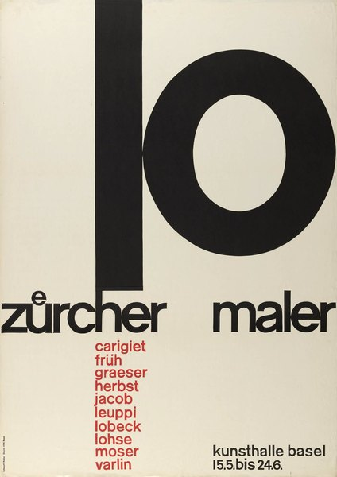
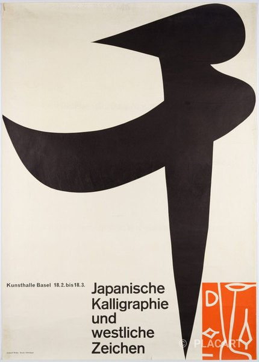
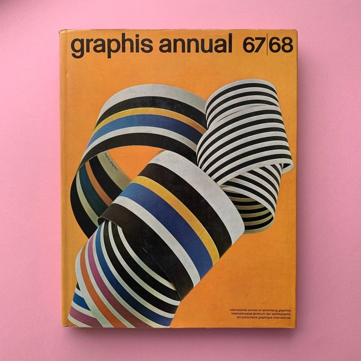
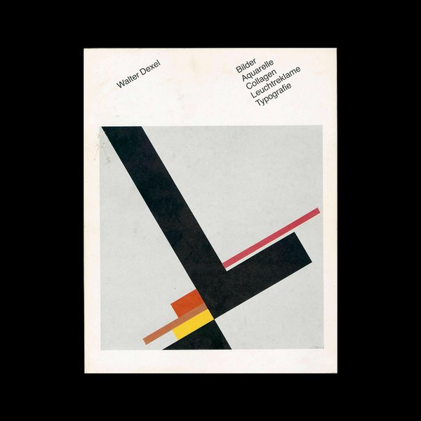
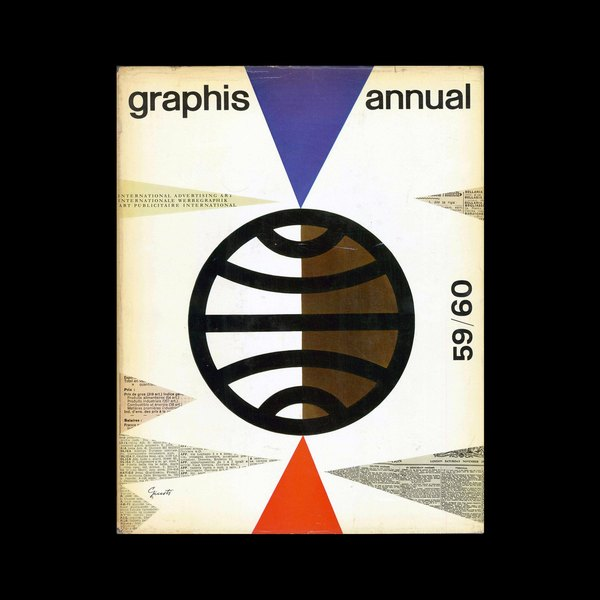

CRVI000855Richard Turley - Design
Bloomberg Businessweek · 2012
Bloomberg Businessweek · 2012

CRVI002712Shin Matsunaga - The Design Works of Shin Matsunaga
1994
1994

CRVI000777Chermayeff & Geismar Associates - Print, September/October 1962
Print XVI:V · 1962
Print XVI:V · 1962

CRVI001110unattributed - Grafisk Revy, nummer 19
Cover, fackteknistkt specialnummer · Bokbinderi-Arbetaren / Svensk Typograftidning · 1965
Cover, fackteknistkt specialnummer · Bokbinderi-Arbetaren / Svensk Typograftidning · 1965

CRVI002682Kazumasa Nagai - Japanische Plakate – heute
2006
2006

CRVI001443Unidentified - Wiener Künstler-Postkarte
Postcard
Postcard

CRVI002671Ikko Tanaka - The New Spirit of Japanese Design: Print
1984
1984

CRVI002692Kenji Itoh - デザイン No. 20 (Design, No. 20)
1961
1961

CRVI002713Shin Matsunaga - Shin Matsunaga Design: Razstava ob BIO 14
1994
1994

CRVI002520Unattributed - Graphiq Magazine Issue 2: Josef Müller-Brockmann, Leader of the Swiss style

CRVI002794Unattributed - zürcher maler, Kunsthalle Basel

CRVI002795Unattributed - Japanische Kalligraphie und westliche Zeichen, Kunsthalle Basel

CRVI002714Shin Matsunaga - Freaks
1995
1995

CRVI002673Ikko Tanaka - The New Spirit of Japanese Design: Print (second colour rendition)
1984
1984

CRVI002679Kazumasa Nagai - 日本のデザイン展望 (Exhibition Designs Today)
1960
1960

CRVI000786Paul Rand - Sources and Resources of 20th Century Design
International Design Conference in Aspen · 1966
International Design Conference in Aspen · 1966

CRVI002670Unattributed - 世界のポスター展 (World Poster Exhibition)
1982
1982

CRVI002828George Giusti - Graphis Annual 63/64
1963
1963

CRVI001440Josh MacPhee - Huelga

CRVI001544Lois Mailou Jones - Textile Design

CRVI000834Seymour Chwast - The Left-Handed Designer
Jacket panel · Harry N. Abrams · 1985
Jacket panel · Harry N. Abrams · 1985

CRVI002696Ryuichi Yamashiro - 2nd International Biennial Exhibition of Prints in Tokyo
1960
1960

CRVI002691Kenji Itoh - デザイン No. 21 (Design, No. 21)
1961
1961

CRVI002690Unattributed - Uncovering the Work of Takashi Kono
2021
2021

CRVI001111Rudy VanderLans - Emigre No. 5, Edizione Italo-Francese
Magazine cover · 43 × 29.1 cm, 30 pages · Emigre Inc., Berkeley · 1986
Magazine cover · 43 × 29.1 cm, 30 pages · Emigre Inc., Berkeley · 1986

CRVI002522Unattributed - Dynamic Perspective: Optically Intriguing

CRVI000779Folio - Folio 5: CIBA-U.S.A.
Sanders Printing Corporation, New York · c. 1960–65
Sanders Printing Corporation, New York · c. 1960–65

CRVI002681Kazumasa Nagai - The 1st International Triennial of Poster in Toyama
1985
1985

CRVI002666Yusaku Kamekura - アイデア / idea No. 81
1967
1967

CRVI002825Franco Grignani - Graphis Annual 67/68
1967
1967

CRVI002654Koga Hirano - Czech Avant-Garde Book Design 1920's-30s
1996
1996

CRVI002665Yusaku Kamekura - グラフィック '55 (Graphic '55)
1955
1955

CRVI000789Franc Nunoo-Quarcoo - Paul Rand: Modernist Design
Monograph on Paul Rand · 2003
Monograph on Paul Rand · 2003

CRVI002801Unattributed - Rosmarie Tissi | Graphic Design Master

CRVI002829Roger Excoffon - Graphis Annual 66/67
1966
1966

CRVI001112El Lissitzky - Die Kunstismen / Les Ismes de l’Art / The Isms of Art, 1914–1924
Book cover · edited by El Lissitzky and Hans Arp · Eugen Rentsch, Erlenbach-Zürich · 1925
Book cover · edited by El Lissitzky and Hans Arp · Eugen Rentsch, Erlenbach-Zürich · 1925

CRVI002675Kazumasa Nagai - 永井一正の世界展 (The World of Kazumasa Nagai)

CRVI000763Tadeusz Gronowski - Polski Plakat Filmowy
Filmowa Agencja Wydawnicza, Warsaw · jacket design · 1957
Filmowa Agencja Wydawnicza, Warsaw · jacket design · 1957

CRVI000781Robert Brownjohn, Ivan Chermayeff, Thomas Geismar - Artist’s Proof for the cover of Pepsi-Cola World, October 1958
Lithograph · 33 × 26.7 cm · 1958
Lithograph · 33 × 26.7 cm · 1958

CRVI002702Hiromu Hara - アイデア / idea No. 13
1955
1955

CRVI002515Unattributed - Josef Müller-Brockmann, construction analysis and timeline
2015
2015

CRVI000823Seymour Chwast - Seymour Poster
AIGA / NY · 56 × 86 cm · 2009
AIGA / NY · 56 × 86 cm · 2009

CRVI001446Unidentified - Secession 1897–1905
Poster
Poster

CRVI002689Noriaki Yokosuka - 12 Graphistes Japonais: Tradition et Nouvelles Techniques
1984
1984

CRVI001439Unidentified - Wall-covering design

CRVI002804Unattributed - Wolfgang Weingart, Barbican Art Gallery
2015
2015

CRVI002815Unattributed - Walter Dexel: Bilder, Aquarelle, Collagen, Leuchtreklame, Typografie
1979
1979

CRVI002697Ryuichi Yamashiro - デザイン No. 27 (Design, No. 27)
1961
1961

CRVI002672Unattributed - DNPグラフィックデザイン・アーカイブ収蔵品展 IV: 田中一光ポスター 1980–2002
2012
2012

CRVI002701Kohei Sugiura - デザイン No. 65 (Design, No. 65)
1964
1964

CRVI002826George Giusti - Graphis Annual 59/60
1959
1959

CRVI002698Unattributed - ニッカー ポスターカラー デラックス (Nicker Poster Colour Deluxe)
1964
1964

CRVI002700Kohei Sugiura - SD Space Design No. 37
1967
1967

CRVI002699Kohei Sugiura - デザイン No. 56 (Design, No. 56)
1964
1964

CRVI002677Unattributed - 日仏現代ポスター交流展 (Japan–France Contemporary Poster Exchange)
1986
1986

CRVI002827Yusaku Kamekura - Graphis Annual 60/61
1960
1960

CRVI000820Seymour Chwast - DesignTalk Lectures
Mohawk · 61 × 89 cm · 1996
Mohawk · 61 × 89 cm · 1996